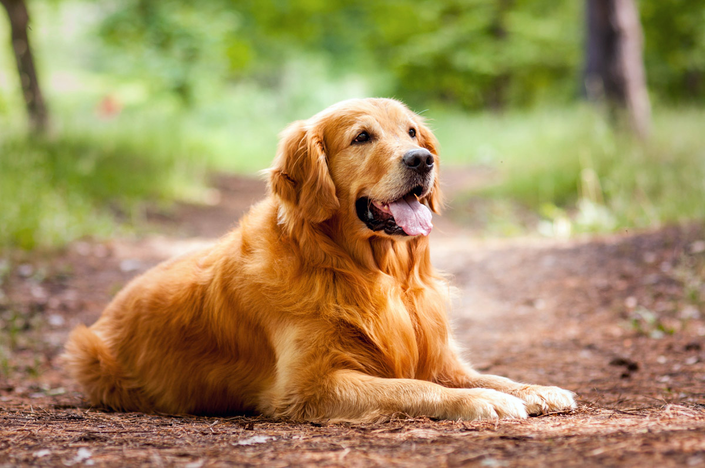
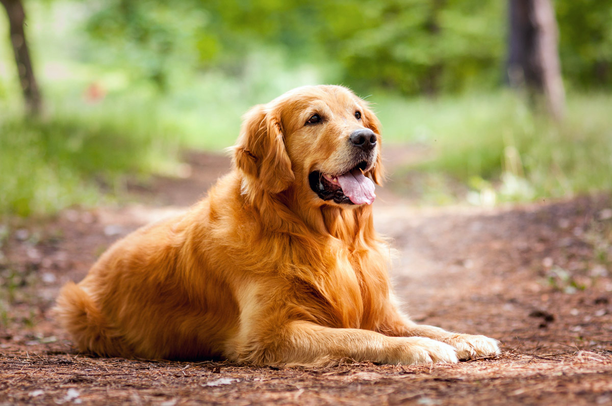

Exploring the Profound Bond Between Humans and Dogs
Dogs are often referred to as "man's best friend," and for good reason. These loyal and loving animals have been companions to humans for thousands of years. Dogs are known for their unwavering loyalty, unconditional love, and ability to provide comfort and companionship. Whether it's a wagging tail, a warm snuggle, or a joyful greeting, dogs have a remarkable way of brightening our lives and filling our hearts with joy.
Beyond their emotional support, dogs also serve various practical roles in society. They are often trained as service dogs to assist individuals with disabilities, such as guiding the visually impaired, alerting the hearing-impaired to important sounds, or providing mobility assistance to those with physical limitations. Additionally, dogs are trained as therapy dogs, visiting hospitals, nursing homes, and schools to provide comfort and emotional support to those in need.
Dogs exhibit a remarkable range of intelligence and abilities. They are highly trainable and can learn an impressive array of commands and tricks. Different breeds have specific skills and instincts that make them well-suited for various tasks. From the herding abilities of border collies to the tracking skills of bloodhounds, dogs have shown their remarkable intelligence and adaptability throughout history.
Dogs come in a wide variety of breeds, each with its unique characteristics and traits. From small and lively terriers to large and gentle retrievers, there is a breed to suit almost every lifestyle and preference. Breeds vary in size, coat type, energy level, and temperament, allowing individuals to find a dog that aligns with their specific needs and preferences.
1.Labrador Retriever
Known for their friendly and outgoing nature, Labrador Retrievers are one of the most popular dog breeds. They are loyal, intelligent, and make great family pets.
2.German Shepherd
German Shepherds are highly versatile and intelligent dogs. They are often used as police or service dogs due to their obedience and trainability. They are also loyal and protective of their families.
3.Golden Retriever
Golden Retrievers are friendly, intelligent, and playful dogs. They are known for their beautiful golden coats and make excellent family pets. They are also commonly used as therapy or assistance dogs.
4.Bulldog
Bulldogs are medium-sized dogs with a distinctive wrinkled face and a sturdy build. Despite their sometimes gruff appearance, they are generally affectionate and gentle dogs. Bulldogs are known for their calm and easygoing temperament.
 


Interesting facts about Labrador Retriever
1.Origin: Labrador Retrievers originated in Newfoundland, Canada. They were initially bred to assist fishermen in retrieving nets and fish from the icy waters of the Atlantic Ocean.
2.Popularity: Labrador Retrievers have consistently been one of the most popular dog breeds worldwide for many years. Their friendly nature, intelligence, and versatility make them suitable for various roles, including family pets, service dogs, search and rescue dogs, and therapy dogs.
3.Coat and Colors: Labrador Retrievers have a short, dense double coat that is water-resistant, which helps them stay warm even in cold water. They come in three main colors: yellow, black, and chocolate. However, it's important to note that coat color does not affect a Labrador's temperament or abilities.
Interesting facts about German Shepherd
1.Origin: German Shepherds, also known as Alsatians, originated in Germany in the late 19th century. They were initially developed as herding dogs for sheep, thanks to their intelligence, agility, and strong work ethic.
2.Versatility: German Shepherds are highly versatile dogs and excel in various roles. They are commonly employed as police dogs, search and rescue dogs, guide dogs for the blind, and service dogs. Their intelligence and trainability make them well-suited for these demanding tasks.
3.Appearance: German Shepherds are medium to large-sized dogs with a well-muscled and sturdy build. They typically have a dense double coat with a variety of color patterns, including black and tan, black and red, sable, and all-black.
Interesting facts about Golden Retriever
1.Origin: Golden Retrievers were first developed in Scotland during the 19th century. They were bred to retrieve game during hunting expeditions, particularly waterfowl. Their name comes from their distinctively golden coat.
2.Friendly and Gentle: Golden Retrievers are known for their friendly and gentle nature. They are generally good-natured and get along well with people, children, and other animals. Their friendly temperament makes them excellent family pets and therapy dogs.
3.Intelligent and Trainable: Golden Retrievers are highly intelligent and rank among the most trainable dog breeds. They are eager to please their owners and excel in obedience training. This makes them versatile and capable of learning various commands and tasks.
Interesting facts about Bulldog
1.Historical Origins: Bulldogs have a long history dating back to England in the 13th century. They were initially bred for bull-baiting, a popular sport of the time. However, the breed has evolved significantly since then, and modern Bulldogs are known for their gentle and friendly nature.
2.Distinctive Appearance: Bulldogs have a unique and distinctive appearance. They have a sturdy and muscular build, a wide and square-shaped head, and a pushed-in nose. Their expressive face, complete with wrinkled skin and a prominent underbite, gives them a distinctive and lovable appearance.
3.Temperament: Bulldogs are known for their gentle and affectionate nature. They are generally good-natured, friendly, and patient, making them great companions and family pets.